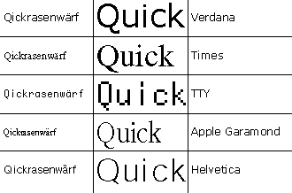

Arbeitsblätter fürs Papier |
webaktive Übungen |
visuelle Kommunikation |
Links |
wir |
Home |
| Typografie | |||||
|
der Bildschirm |
|||||
 |
Der Bildschirm ist ein Medium mit speziellen Bedingungen. Vom Papier ist man Schärfe gewohnt, die der Bildschirm nicht leisten kann. Das Web mit seiner technischen Besonderheit html, verschärft die Situation noch. Der Browser des Empfängers macht die Webseiten erst sichtbar. So ist viel von empfangenden Rechner abhängig. Die Größe der Seite z.B. ist abhängig von der Bildschirmauflösung des Empfängers. Auch die Schriftwahl kann vom Browser geregelt sein. Suchen Sie die Schrift auf ihrem Rechner , die am lesetauglichsten für den Bildschirm ist. • Trotzdem sollten Sie sich mit der Schrift beschäftigen, für diejenigen, die ihre Einstellungen zur Schrift übernehmen. Der Duktus der gewählten Schrift sollte klar, offen und wenig differenziert sein. Feinheiten kann der Bildschirm nicht wiedergeben. Es kann sinnvoll sein, eine Schrift zu wählen, die auf vielen Bildschirmen vorhanden ist. Wenn man
das genau festlegen will, sollte man in die Tiefen der html-Welt und der
CSS-Stile •
eintauchen wollen. |
||||